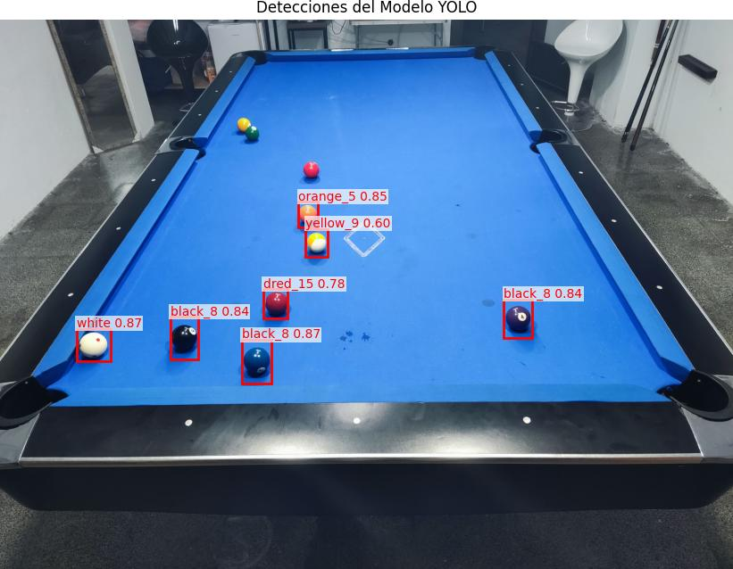

Entrenamiento del Modelo
Un recorrido por el proceso de entrenamiento con YOLOv8, los desafíos de hardware encontrados (CPU vs. GPU) y el análisis de los resultados obtenidos.
El Reto del Hardware y la Búsqueda de la Eficiencia
Desafío
El entrenamiento en CPU resultó ser extremadamente lento (~35 min/época), haciendo inviable completar suficientes épocas y dificultando la salida de posibles mínimos locales en la función de pérdida.
Propuesta
Migrar el entorno de entrenamiento a un servicio con GPU (Google Colab) para acelerar drásticamente el proceso. Paralelamente, investigar la compleja configuración de ROCm para habilitar la GPU AMD local.
Acciones
- Ejecución de entrenamientos en CPU y Colab.
- Reanudación desde checkpoints (`last.pt`).
- Análisis comparativo de métricas.
- Pruebas visuales del modelo en varias épocas.
Resultados
Un modelo funcional entrenado durante 36 épocas en total. Se demuestra la viabilidad del proyecto y se confirma que la aceleración por GPU es indispensable para la eficiencia del entrenamiento.
Proceso Técnico de Entrenamiento
Paso 1: Iniciar y Reanudar Entrenamiento
Se utiliza un script de Python con la librería `ultralytics`. El entrenamiento inicial parte de un modelo pre-entrenado (`yolov8n.pt`). Para continuar, el script se modifica para cargar el último checkpoint (`last.pt`), permitiendo reanudar el proceso sin perder el progreso.
Lógica de Entrenamiento (Python)
from ultralytics import YOLO
# Iniciar con un modelo pre-entrenado
# model = YOLO('yolov8n.pt')
# Reanudar desde el último checkpoint
model = YOLO('runs/billar_balls_detection_v1/weights/last.pt')
# Iniciar el proceso de entrenamiento
results = model.train(
data='custom_data.yaml',
epochs=50,
imgsz=1080,
batch=16
)Paso 2: Inferencia y Prueba Visual
Para evaluar el rendimiento del modelo en cualquier etapa, se utiliza un segundo script que carga los pesos del checkpoint (`best.pt` o `last.pt`), realiza una predicción sobre una imagen de prueba y visualiza los resultados dibujando las cajas delimitadoras (bounding boxes) y las etiquetas de clase.
Resultados Visuales del Entrenamiento
Conocimientos y Conceptos Aplicados
Transfer Learning
Técnica que consiste en usar un modelo pre-entrenado (YOLOv8n) como punto de partida para acelerar y mejorar el entrenamiento en un dataset específico.
Checkpoints
Puntos de guardado del estado del modelo (`last.pt`, `best.pt`) que permiten detener y reanudar el entrenamiento, crucial para sesiones largas o con recursos limitados.
Métricas de Detección
Evaluación del rendimiento mediante indicadores clave como Precisión (P), Recall (R) y mAP (mean Average Precision), que miden la calidad de las detecciones.
Funciones de Pérdida
El modelo se optimiza minimizando pérdidas como `box_loss` (localización), `cls_loss` (clasificación) y `dfl_loss` (precisión de la caja).
Aceleración por GPU
Uso de hardware especializado (NVIDIA CUDA o AMD ROCm) para reducir drásticamente los tiempos de entrenamiento en comparación con una CPU.
Hiperparámetros
Parámetros configurables del entrenamiento como `epochs` (ciclos de entrenamiento), `imgsz` (tamaño de imagen) y `batch` (lote de datos por iteración).
Evolución y Rendimiento del Modelo
Evolución de las Métricas mAP
Mejora de la precisión media (mAP) a lo largo de las 36 épocas de entrenamiento. mAP50-95 es una métrica más estricta.
Evolución de las Funciones de Pérdida
Disminución de los errores de localización (box), clasificación (cls) y de la caja (dfl) durante el entrenamiento.
Rendimiento Final por Clase (mAP50)
Precisión media del mejor modelo para cada tipo de bola, permitiendo ver qué clases son más fáciles o difíciles de detectar.
Glosario de Términos
Conclusiones y Siguientes Pasos
Conclusiones Clave
- La aceleración por GPU no es una opción, sino un requisito fundamental para el entrenamiento eficiente de modelos de deep learning.
- El modelo muestra una clara curva de aprendizaje, donde más épocas de entrenamiento se traducen en mejores métricas de rendimiento.
- Reanudar el entrenamiento desde checkpoints es una estrategia efectiva y necesaria para gestionar sesiones largas y progresar de forma iterativa.
Próximos Pasos
1. Optimización del Entrenamiento
Completar un entrenamiento largo (100+ épocas) en GPU para llevar el mAP a su máximo potencial.
2. Experimentar con Hiperparámetros
Probar diferentes tasas de aprendizaje, tamaños de lote u optimizadores para afinar aún más el rendimiento del modelo.
3. Despliegue del Modelo
Utilizar el mejor modelo guardado (`best.pt`) para construir una aplicación que realice detecciones en tiempo real usando una cámara.